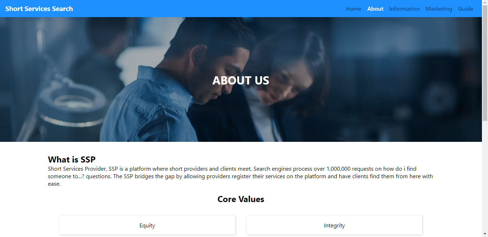
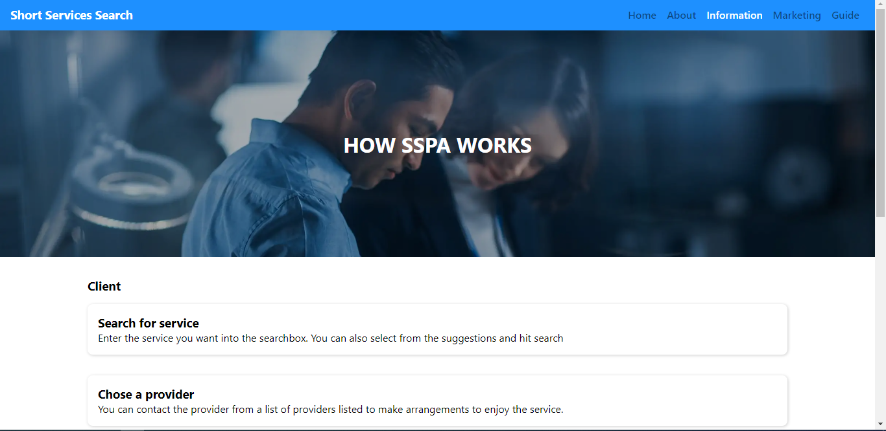
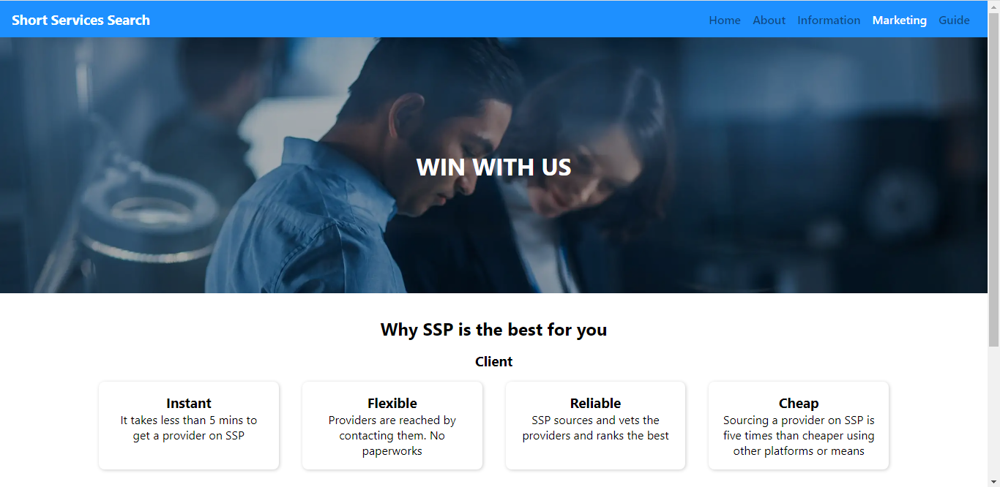

Introduction
This document explains how to use the short services providers applocation. This manual allows users to gain knowledge on the software's functonality and archtecture.
The Navigation Bar
At the top of this website is the the Navigation Bar. The navigation bar consists of two sections: brand name and navbar section. The brand section has the name of the company and navbar section contain links to different pages of this application.
Each links to a page on the website.
Pages
Home Page
The home page is the entry point to the application. It has a search field where users can search for a short service keyword. And on search, the user is taken to a services page where the services are fitered according to the search keyword input.
About Page
About page contains information about the company and their core values
Information Page
This page defines steps required to get started with the software. How to join and how to benefit from it.
Marketing Page
The marketing page markets the SSP product it explains why users should buy the SSP idea. Here providers can learn what they can get by using the product.
Guide Page
This is the user guide manual. It explains how the sspa can be used. Including the archtecture and the functionality of the appplication